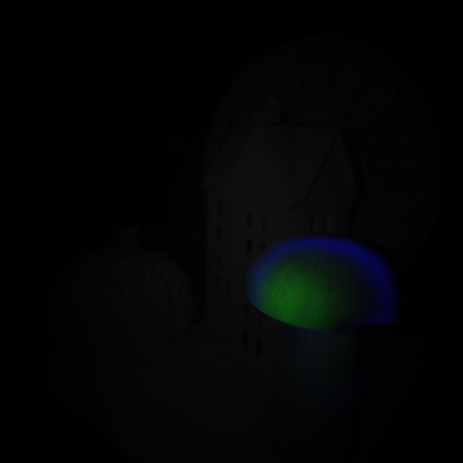
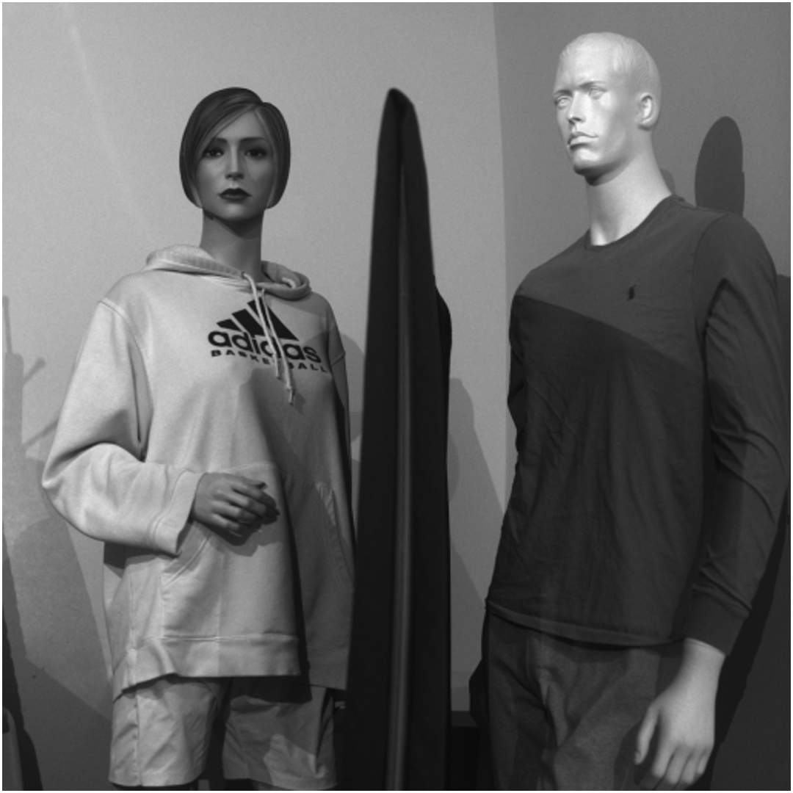
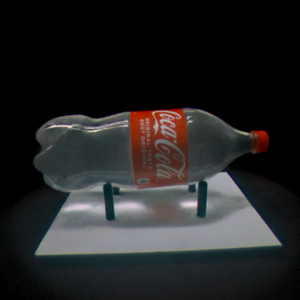
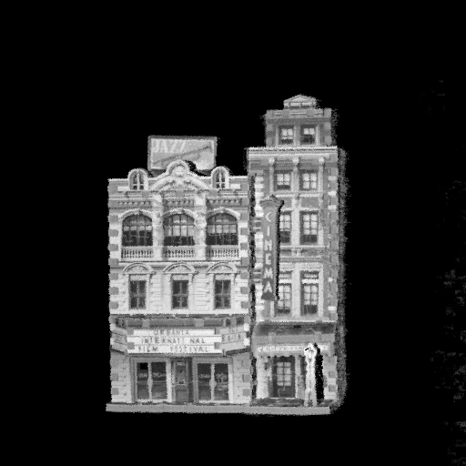
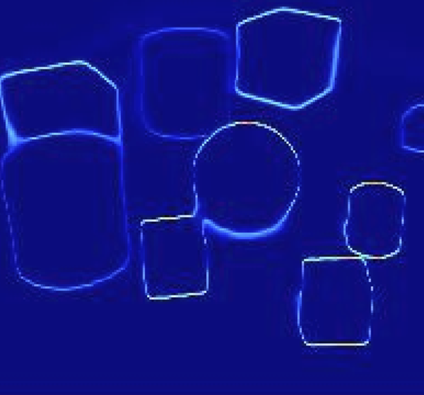
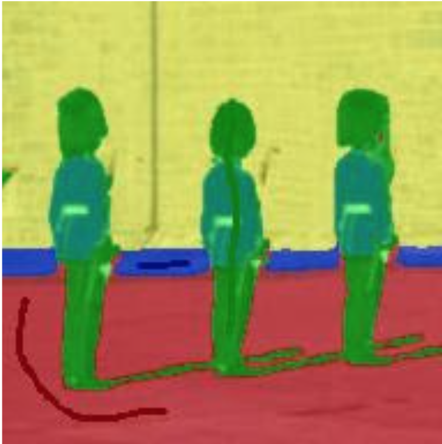

|
News
|
|
Research
I am broadly interested in scene understanding. That is using visual cues to infer properites of objects and scenes.
|

|
Neural Inverse Rendering from Propagating Light
Anagh Malik*, Benjamin Attal*, Andrew Xie, Matthew O'Toole, David B. Lindell
CVPR, 2025 (Oral Presentation, Best Student Paper Award 🏆)
project page
/
arXiv
/
code
Time-resolved relighting and geometry estimation through radiance caching.
|

|
Opportunistic Single‑Photon Time of Flight
Sotiris Nousias*,
Mian Wei*,
Howard Xiao,
Maxx Wu,
Shahmeer Athar,
Kevin J. Wang,
Anagh Malik,
David A. Barmherzig,
David B. Lindell,
Kiriakos N. Kutulakos
CVPR, 2025 (Oral Presentation)
project page
We propose a passive single‑photon method that opportunistically recovers time‑of‑flight from ambient pulsed light sources.
|

|
Flying with Photons: Rendering Novel Views of Propagating Light
Anagh Malik, Noah Juravsky, Ryan Po, Gordon Wetzstein, Kiriakos N. Kutulakos, David B. Lindell
ECCV, 2024 (Oral Presentation)
project page
/
video
/
arXiv
/
code
Novel view synthesis of arbitrary light propagation videos - including effects such as scattering or interreflections.
|

|
Transient Neural Radiance Fields for Lidar View Synthesis and 3D Reconstruction
Anagh Malik, Parsa Mirdehghan, Sotiris Nousias, Kiriakos N. Kutulakos, David B. Lindell
NeurIPS, 2023 (Spotlight)
project page
/
video
/
arXiv
/
code
We introduce a method to do novel view lidar synthesis, allowing sparse view scene reconstruction.
|
|

|
Exploring Neural Representations for Self-Supervised Segmentation
Anagh Malik
Master's Thesis, 2022
We develop a method for self-supervised segmentation through agreement and self-distillation.
|
|

|
SegDIP: The Unreasonable Effectiveness of Randomly-Initialized CNNs for Interactive Segmentation
Anagh Malik, Shuaifeng Zhi, Marwan Taher, Ronald Clark, Andrew Davison
Technical Report 2021
We train an encoder-decoder network to map from xy-coordinates to RGB values and semantic classes, allowing real-time segmentation of an image.
|
|
{kind=link}